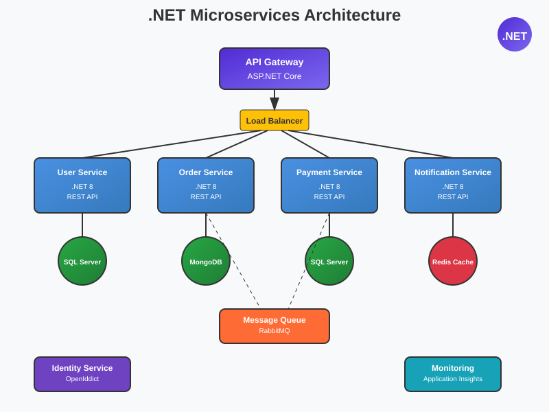

De overgang van een monolithische architectuur naar microservices is een van de meest significante beslissingen die je als .NET developer kunt maken. In deze uitgebreide gids neem ik je mee door het complete proces - van het begrijpen van de fundamenten tot het daadwerkelijk implementeren van je eerste microservices met Docker.
Inhoudsopgave
- Wat zijn microservices?
- Monoliet vs. Microservices
- Wanneer overstappen naar microservices?
- Architectuur patterns & best practices
- Docker fundamenten voor .NET
- Je eerste .NET microservice bouwen
- Service communicatie patterns
- Data management & databases
- Deployment strategieën
- Monitoring & logging
- 10 Veelgemaakte fouten & hoe ze te voorkomen
1. Wat zijn microservices?
Microservices zijn een architectuurpatroon waarin een applicatie wordt opgebouwd uit een verzameling van kleine, autonome services die elk een specifieke business capability implementeren. Deze services worden onafhankelijk ontwikkeld, gedeployed en geschaald.

voorbeeld van een microservices architectuur
De definitie van microservices
Martin Fowler en James Lewis definieerden microservices in 2014 als "een aanpak voor het ontwikkelen van een enkele applicatie als een suite van kleine services, elk draaiend in zijn eigen proces en communicerend via lichtgewicht mechanismen, vaak een HTTP resource API."
🎯 Kernkenmerken van Microservices:
- Componentization via Services: Business functionaliteit wordt opgesplitst in deploybare services
- Organized around Business Capabilities: Teams en services georganiseerd rond wat de business nodig heeft
- Products not Projects: Teams eigenen en onderhouden services gedurende hun hele levensduur
- Smart endpoints and dumb pipes: Business logic zit in de services, niet in de infrastructure
- Decentralized Governance: Elk team maakt eigen technische beslissingen voor hun services
- Decentralized Data Management: Elke service beheert zijn eigen database
- Infrastructure Automation: Geautomatiseerde deployment en monitoring
- Design for failure: Services zijn ontworpen om failures in andere services te overleven
- Evolutionary Design: Services kunnen evolueren zonder andere services te breken
Microservices vs. SOA (Service-Oriented Architecture)
Microservices worden vaak vergeleken met SOA, maar er zijn belangrijke verschillen:
| Aspect | SOA | Microservices |
|---|---|---|
| Communication | SOAP, XML, ESB | REST, JSON, HTTP |
| Approach | Top-down design | Bottom-up evolution |
| Governance | Centralized | Decentralized |
| Service Size | Often large | Small, focused |
Domain-Driven Design (DDD) als Foundation
Microservices en DDD gaan hand in hand. DDD concepten zijn essentieel voor het correct opdelen van je applicatie in services:
🏗️ DDD Concepten voor Microservices:
- Bounded Context: Een logische grens waarbinnen een domeinmodel consistente betekenis heeft
- Aggregate: Een cluster van domeinobjecten die als één eenheid behandeld kunnen worden
- Domain Service: Business logic die niet natuurlijk thuishoort in een entity of value object
- Ubiquitous Language: Gemeenschappelijke taal tussen development team en domain experts
- Context Mapping: Hoe verschillende bounded contexts met elkaar relateren
// Voorbeeld van een Bounded Context in .NET
namespace ECommerce.OrderManagement
{
// Aggregate Root
public class Order : AggregateRoot
{
public OrderId Id { get; private set; }
public CustomerId CustomerId { get; private set; }
public OrderStatus Status { get; private set; }
private readonly List<OrderLine> _orderLines = new();
public void AddOrderLine(ProductId productId, int quantity, Money unitPrice)
{
if (Status != OrderStatus.Draft)
throw new InvalidOperationException("Cannot modify confirmed order");
var orderLine = new OrderLine(productId, quantity, unitPrice);
_orderLines.Add(orderLine);
// Domain event
AddDomainEvent(new OrderLineAddedEvent(Id, productId, quantity));
}
public void Confirm()
{
if (!_orderLines.Any())
throw new DomainException("Cannot confirm empty order");
Status = OrderStatus.Confirmed;
AddDomainEvent(new OrderConfirmedEvent(Id, CustomerId, GetTotal()));
}
private Money GetTotal() => _orderLines.Sum(line => line.GetTotal());
}
// Value Object
public class OrderId : ValueObject
{
public int Value { get; }
public OrderId(int value)
{
if (value <= 0) throw new ArgumentException("Order ID must be positive");
Value = value;
}
protected override IEnumerable<object> GetEqualityComponents()
{
yield return Value;
}
}
// Domain Service
public interface IPricingService
{
Money CalculateDiscount(CustomerId customerId, IEnumerable<OrderLine> orderLines);
}
}
2. Monoliet vs. Microservices: Een Gedetailleerde Vergelijking
De keuze tussen een monolithische architectuur en microservices is niet zwart-wit. Beide hebben hun plaats in moderne softwareontwikkeling. Een grondig begrip van de trade-offs is cruciaal voor het maken van de juiste beslissing voor jouw specifieke context.
De Monolithische Architectuur: Dieper Analysis
Een monoliet is niet per definitie slecht. Veel succesvolle applicaties draaien perfect op een monolithische architectuur. Hier is een diepgaande analyse:
✅ Voordelen van Monolithische Architectuur:
1. Eenvoudige Development & Testing
Alles draait in één proces, dus debugging en profiling zijn straightforward. Je kunt breakpoints zetten door de hele applicatie heen zonder complex distributed debugging.
2. ACID Transactions
Database transactions work natuurlijk omdat alles binnen dezelfde database boundary valt. Complex business transactions zijn eenvoudig te implementeren.
3. Performance Benefits
Geen netwerklatency tussen componenten. Method calls zijn in-process en dus razendsnel. Caching strategieën zijn eenvoudiger te implementeren.
4. Operational Simplicity
Één deployment artifact, één set van logs, één monitoring endpoint. Infrastructure requirements zijn minimaal in vergelijking met distributed systems.
❌ Nadelen van Monolithische Architectuur:
1. Scaling Challenges
Je moet de hele applicatie schalen, ook als maar één component extra resources nodig heeft. Dit is inefficiënt en duur.
2. Technology Lock-in
Je zit vast aan één technology stack. Experimenteren met nieuwe technologieën of frameworks is risicovol en moeilijk.
3. Team Coordination Overhead
Naarmate het team groeit, moeten meer developers coördineren op dezelfde codebase. Merge conflicts en blocking dependencies nemen toe.
4. Fault Tolerance
Een bug of performance issue in één module kan de hele applicatie platleggen. Er is geen isolation tussen components.
Performance Comparison: Real Numbers
Hier zijn concrete performance metrics gebaseerd op praktijkervaring met beide architecturen:
| Metric | Monoliet | Microservices |
|---|---|---|
| Response Time (internal calls) | < 1ms | 5-50ms |
| Memory Overhead | Low (shared process) | High (separate processes) |
| Development Velocity (early) | Fast | Slow |
| Development Velocity (mature) | Slow (large teams) | Fast (small teams) |
| Fault Tolerance | Single point of failure | Graceful degradation |
6. Je Eerste .NET Microservice: User Management Service
We gaan een production-ready User Management microservice bouwen die alle best practices implementeert: clean architecture, proper error handling, monitoring, en security. Deze service zal fungeren als een template voor alle andere microservices in je architectuur.
Project Structure & Clean Architecture
// Project structure voor UserService
UserService/
├── UserService.Api/ # Web API layer
│ ├── Controllers/
│ ├── Middleware/
│ ├── Program.cs
│ └── appsettings.json
├── UserService.Core/ # Domain & Application layer
│ ├── Entities/
│ ├── Interfaces/
│ ├── Services/
│ ├── DTOs/
│ └── Events/
├── UserService.Infrastructure/ # Data access & external concerns
│ ├── Data/
│ ├── Repositories/
│ ├── Services/
│ └── Configurations/
└── UserService.Tests/ # Tests
├── Unit/
├── Integration/
└── TestHelpers/
Domain Layer: Entities & Value Objects
// UserService.Core/Entities/User.cs
using System.ComponentModel.DataAnnotations;
namespace UserService.Core.Entities
{
public class User : BaseEntity
{
public Guid Id { get; private set; }
public Email Email { get; private set; }
public string FirstName { get; private set; }
public string LastName { get; private set; }
public UserStatus Status { get; private set; }
public DateTime CreatedAt { get; private set; }
public DateTime? UpdatedAt { get; private set; }
private User() { } // EF Constructor
public User(Email email, string firstName, string lastName)
{
Id = Guid.NewGuid();
Email = email ?? throw new ArgumentNullException(nameof(email));
FirstName = ValidateName(firstName, nameof(firstName));
LastName = ValidateName(lastName, nameof(lastName));
Status = UserStatus.Active;
CreatedAt = DateTime.UtcNow;
// Domain event
AddDomainEvent(new UserCreatedEvent(Id, Email.Value, $"{FirstName} {LastName}"));
}
public void UpdateProfile(string firstName, string lastName)
{
if (Status == UserStatus.Deleted)
throw new InvalidOperationException("Cannot update deleted user");
FirstName = ValidateName(firstName, nameof(firstName));
LastName = ValidateName(lastName, nameof(lastName));
UpdatedAt = DateTime.UtcNow;
AddDomainEvent(new UserProfileUpdatedEvent(Id, FirstName, LastName));
}
public void ChangeEmail(Email newEmail)
{
if (Status == UserStatus.Deleted)
throw new InvalidOperationException("Cannot update deleted user");
var oldEmail = Email.Value;
Email = newEmail ?? throw new ArgumentNullException(nameof(newEmail));
UpdatedAt = DateTime.UtcNow;
AddDomainEvent(new UserEmailChangedEvent(Id, oldEmail, newEmail.Value));
}
public void Deactivate()
{
if (Status == UserStatus.Deleted)
throw new InvalidOperationException("Cannot deactivate deleted user");
Status = UserStatus.Inactive;
UpdatedAt = DateTime.UtcNow;
AddDomainEvent(new UserStatusChangedEvent(Id, UserStatus.Inactive));
}
public void Delete()
{
Status = UserStatus.Deleted;
UpdatedAt = DateTime.UtcNow;
AddDomainEvent(new UserDeletedEvent(Id, Email.Value));
}
private static string ValidateName(string name, string parameterName)
{
if (string.IsNullOrWhiteSpace(name))
throw new ArgumentException("Name cannot be empty", parameterName);
if (name.Length > 100)
throw new ArgumentException("Name cannot exceed 100 characters", parameterName);
return name.Trim();
}
}
// Value Object voor Email
public class Email : ValueObject
{
public string Value { get; private set; }
private Email() { } // EF Constructor
public Email(string email)
{
if (string.IsNullOrWhiteSpace(email))
throw new ArgumentException("Email cannot be empty");
if (!IsValidEmail(email))
throw new ArgumentException("Invalid email format");
Value = email.ToLowerInvariant();
}
private static bool IsValidEmail(string email)
{
try
{
var mailAddress = new System.Net.Mail.MailAddress(email);
return mailAddress.Address == email;
}
catch
{
return false;
}
}
protected override IEnumerable<object> GetEqualityComponents()
{
yield return Value;
}
public static implicit operator string(Email email) => email?.Value;
public static implicit operator Email(string email) => new(email);
}
public enum UserStatus
{
Active = 1,
Inactive = 2,
Deleted = 3
}
// Base classes
public abstract class BaseEntity
{
private readonly List<DomainEvent> _domainEvents = new();
public IReadOnlyCollection<DomainEvent> DomainEvents => _domainEvents.AsReadOnly();
protected void AddDomainEvent(DomainEvent domainEvent)
{
_domainEvents.Add(domainEvent);
}
public void ClearDomainEvents()
{
_domainEvents.Clear();
}
}
public abstract class ValueObject
{
protected abstract IEnumerable<object> GetEqualityComponents();
public override bool Equals(object obj)
{
if (obj == null || obj.GetType() != GetType())
return false;
var other = (ValueObject)obj;
return GetEqualityComponents().SequenceEqual(other.GetEqualityComponents());
}
public override int GetHashCode()
{
return GetEqualityComponents()
.Select(x => x?.GetHashCode() ?? 0)
.Aggregate((x, y) => x ^ y);
}
}
// Domain Events
public abstract record DomainEvent(Guid Id, DateTime OccurredOn)
{
protected DomainEvent() : this(Guid.NewGuid(), DateTime.UtcNow) { }
}
public record UserCreatedEvent(Guid UserId, string Email, string FullName)
: DomainEvent;
public record UserProfileUpdatedEvent(Guid UserId, string FirstName, string LastName)
: DomainEvent;
public record UserEmailChangedEvent(Guid UserId, string OldEmail, string NewEmail)
: DomainEvent;
public record UserStatusChangedEvent(Guid UserId, UserStatus NewStatus)
: DomainEvent;
public record UserDeletedEvent(Guid UserId, string Email)
: DomainEvent;
}
Application Layer: DTOs & Services
// UserService.Core/DTOs/UserDtos.cs
namespace UserService.Core.DTOs
{
public record UserDto(
Guid Id,
string Email,
string FirstName,
string LastName,
string Status,
DateTime CreatedAt,
DateTime? UpdatedAt);
public record CreateUserDto(
string Email,
string FirstName,
string LastName)
{
public User ToEntity() => new(new Email(Email), FirstName, LastName);
}
public record UpdateUserDto(
string FirstName,
string LastName);
public record ChangeEmailDto(
string NewEmail);
public record PagedResult<T>(
IEnumerable<T> Items,
int Page,
int PageSize,
int TotalCount,
int TotalPages);
public record UserSearchDto(
string? Email = null,
string? FirstName = null,
string? LastName = null,
UserStatus? Status = null,
int Page = 1,
int PageSize = 20);
}
// UserService.Core/Interfaces/IUserRepository.cs
namespace UserService.Core.Interfaces
{
public interface IUserRepository
{
Task<User?> GetByIdAsync(Guid id, CancellationToken cancellationToken = default);
Task<User?> GetByEmailAsync(string email, CancellationToken cancellationToken = default);
Task<PagedResult<User>> SearchAsync(UserSearchDto search, CancellationToken cancellationToken = default);
Task<User> AddAsync(User user, CancellationToken cancellationToken = default);
Task UpdateAsync(User user, CancellationToken cancellationToken = default);
Task<bool> ExistsAsync(Guid id, CancellationToken cancellationToken = default);
Task<bool> EmailExistsAsync(string email, CancellationToken cancellationToken = default);
}
public interface IUnitOfWork
{
Task<int> SaveChangesAsync(CancellationToken cancellationToken = default);
Task<bool> SaveEntitiesAsync(CancellationToken cancellationToken = default);
}
}
// UserService.Core/Services/UserService.cs
namespace UserService.Core.Services
{
public class UserApplicationService : IUserApplicationService
{
private readonly IUserRepository _userRepository;
private readonly IUnitOfWork _unitOfWork;
private readonly ILogger<UserApplicationService> _logger;
private readonly IEventBus _eventBus;
public UserApplicationService(
IUserRepository userRepository,
IUnitOfWork unitOfWork,
ILogger<UserApplicationService> logger,
IEventBus eventBus)
{
_userRepository = userRepository;
_unitOfWork = unitOfWork;
_logger = logger;
_eventBus = eventBus;
}
public async Task<Result<UserDto>> CreateUserAsync(CreateUserDto dto, CancellationToken cancellationToken = default)
{
try
{
// Check if email already exists
if (await _userRepository.EmailExistsAsync(dto.Email, cancellationToken))
{
return Result<UserDto>.Failure("A user with this email already exists");
}
// Create user
var user = dto.ToEntity();
await _userRepository.AddAsync(user, cancellationToken);
// Save and publish events
var saved = await _unitOfWork.SaveEntitiesAsync(cancellationToken);
if (!saved)
{
return Result<UserDto>.Failure("Failed to create user");
}
// Publish domain events
await PublishDomainEventsAsync(user);
var userDto = MapToDto(user);
_logger.LogInformation("User created successfully with ID {UserId}", user.Id);
return Result<UserDto>.Success(userDto);
}
catch (ArgumentException ex)
{
_logger.LogWarning(ex, "Invalid user data provided");
return Result<UserDto>.Failure(ex.Message);
}
catch (Exception ex)
{
_logger.LogError(ex, "Error creating user");
return Result<UserDto>.Failure("An error occurred while creating the user");
}
}
public async Task<Result<UserDto>> GetUserAsync(Guid id, CancellationToken cancellationToken = default)
{
try
{
var user = await _userRepository.GetByIdAsync(id, cancellationToken);
if (user == null)
{
return Result<UserDto>.NotFound();
}
return Result<UserDto>.Success(MapToDto(user));
}
catch (Exception ex)
{
_logger.LogError(ex, "Error retrieving user {UserId}", id);
return Result<UserDto>.Failure("An error occurred while retrieving the user");
}
}
public async Task<Result<UserDto>> UpdateUserAsync(Guid id, UpdateUserDto dto, CancellationToken cancellationToken = default)
{
try
{
var user = await _userRepository.GetByIdAsync(id, cancellationToken);
if (user == null)
{
return Result<UserDto>.NotFound();
}
user.UpdateProfile(dto.FirstName, dto.LastName);
await _userRepository.UpdateAsync(user, cancellationToken);
var saved = await _unitOfWork.SaveEntitiesAsync(cancellationToken);
if (!saved)
{
return Result<UserDto>.Failure("Failed to update user");
}
await PublishDomainEventsAsync(user);
_logger.LogInformation("User {UserId} updated successfully", id);
return Result<UserDto>.Success(MapToDto(user));
}
catch (ArgumentException ex)
{
_logger.LogWarning(ex, "Invalid user data provided for user {UserId}", id);
return Result<UserDto>.Failure(ex.Message);
}
catch (Exception ex)
{
_logger.LogError(ex, "Error updating user {UserId}", id);
return Result<UserDto>.Failure("An error occurred while updating the user");
}
}
public async Task<Result<PagedResult<UserDto>>> SearchUsersAsync(UserSearchDto search, CancellationToken cancellationToken = default)
{
try
{
var result = await _userRepository.SearchAsync(search, cancellationToken);
var dtos = result.Items.Select(MapToDto);
var pagedResult = new PagedResult<UserDto>(
dtos, result.Page, result.PageSize, result.TotalCount, result.TotalPages);
return Result<PagedResult<UserDto>>.Success(pagedResult);
}
catch (Exception ex)
{
_logger.LogError(ex, "Error searching users");
return Result<PagedResult<UserDto>>.Failure("An error occurred while searching users");
}
}
private async Task PublishDomainEventsAsync(User user)
{
foreach (var domainEvent in user.DomainEvents)
{
await _eventBus.PublishAsync(domainEvent);
}
user.ClearDomainEvents();
}
private static UserDto MapToDto(User user) => new(
user.Id,
user.Email.Value,
user.FirstName,
user.LastName,
user.Status.ToString(),
user.CreatedAt,
user.UpdatedAt);
}
// Result pattern voor better error handling
public class Result<T>
{
public T Value { get; private set; }
public bool IsSuccess { get; private set; }
public string Error { get; private set; }
public bool IsNotFound { get; private set; }
private Result(T value, bool isSuccess, string error, bool isNotFound = false)
{
Value = value;
IsSuccess = isSuccess;
Error = error;
IsNotFound = isNotFound;
}
public static Result<T> Success(T value) => new(value, true, null);
public static Result<T> Failure(string error) => new(default, false, error);
public static Result<T> NotFound() => new(default, false, "Not found", true);
}
}
Infrastructure Layer: Database & Repository
// UserService.Infrastructure/Data/UserDbContext.cs
namespace UserService.Infrastructure.Data
{
public class UserDbContext : DbContext, IUnitOfWork
{
private readonly IEventBus _eventBus;
private readonly ILogger<UserDbContext> _logger;
public UserDbContext(DbContextOptions<UserDbContext> options, IEventBus eventBus, ILogger<UserDbContext> logger)
: base(options)
{
_eventBus = eventBus;
_logger = logger;
}
public DbSet<User> Users { get; set; }
protected override void OnModelCreating(ModelBuilder modelBuilder)
{
base.OnModelCreating(modelBuilder);
modelBuilder.ApplyConfigurationsFromAssembly(typeof(UserDbContext).Assembly);
}
public async Task<bool> SaveEntitiesAsync(CancellationToken cancellationToken = default)
{
try
{
// Publish domain events before saving
await PublishDomainEventsAsync();
var result = await SaveChangesAsync(cancellationToken);
return result > 0;
}
catch (Exception ex)
{
_logger.LogError(ex, "Error saving entities");
return false;
}
}
private async Task PublishDomainEventsAsync()
{
var entitiesWithEvents = ChangeTracker
.Entries<BaseEntity>()
.Where(e => e.Entity.DomainEvents.Any())
.Select(e => e.Entity);
var events = entitiesWithEvents
.SelectMany(e => e.DomainEvents)
.ToList();
entitiesWithEvents.ToList().ForEach(e => e.ClearDomainEvents());
foreach (var domainEvent in events)
{
await _eventBus.PublishAsync(domainEvent);
}
}
}
// Entity configurations
public class UserConfiguration : IEntityTypeConfiguration<User>
{
public void Configure(EntityTypeBuilder<User> builder)
{
builder.HasKey(x => x.Id);
builder.Property(x => x.FirstName)
.IsRequired()
.HasMaxLength(100);
builder.Property(x => x.LastName)
.IsRequired()
.HasMaxLength(100);
// Value object configuration
builder.OwnsOne(x => x.Email, email =>
{
email.Property(e => e.Value)
.IsRequired()
.HasMaxLength(320)
.HasColumnName("Email");
email.HasIndex(e => e.Value)
.IsUnique()
.HasDatabaseName("IX_Users_Email");
});
builder.Property(x => x.Status)
.IsRequired()
.HasConversion<int>();
builder.Property(x => x.CreatedAt)
.IsRequired();
builder.Property(x => x.UpdatedAt);
// Ignore domain events (not persisted)
builder.Ignore(x => x.DomainEvents);
// Table configuration
builder.ToTable("Users");
// Indexes
builder.HasIndex(x => x.CreatedAt);
builder.HasIndex(x => x.Status);
}
}
// Repository implementation
public class UserRepository : IUserRepository
{
private readonly UserDbContext _context;
private readonly ILogger<UserRepository> _logger;
public UserRepository(UserDbContext context, ILogger<UserRepository> logger)
{
_context = context;
_logger = logger;
}
public async Task<User?> GetByIdAsync(Guid id, CancellationToken cancellationToken = default)
{
return await _context.Users
.FirstOrDefaultAsync(u => u.Id == id, cancellationToken);
}
public async Task<User?> GetByEmailAsync(string email, CancellationToken cancellationToken = default)
{
return await _context.Users
.FirstOrDefaultAsync(u => u.Email.Value == email.ToLowerInvariant(), cancellationToken);
}
public async Task<PagedResult<User>> SearchAsync(UserSearchDto search, CancellationToken cancellationToken = default)
{
var query = _context.Users.AsQueryable();
// Apply filters
if (!string.IsNullOrEmpty(search.Email))
query = query.Where(u => u.Email.Value.Contains(search.Email.ToLowerInvariant()));
if (!string.IsNullOrEmpty(search.FirstName))
query = query.Where(u => u.FirstName.Contains(search.FirstName));
if (!string.IsNullOrEmpty(search.LastName))
query = query.Where(u => u.LastName.Contains(search.LastName));
if (search.Status.HasValue)
query = query.Where(u => u.Status == search.Status.Value);
// Get total count
var totalCount = await query.CountAsync(cancellationToken);
// Apply paging
var users = await query
.OrderBy(u => u.CreatedAt)
.Skip((search.Page - 1) * search.PageSize)
.Take(search.PageSize)
.ToListAsync(cancellationToken);
var totalPages = (int)Math.Ceiling((double)totalCount / search.PageSize);
return new PagedResult<User>(users, search.Page, search.PageSize, totalCount, totalPages);
}
public async Task<User> AddAsync(User user, CancellationToken cancellationToken = default)
{
var result = await _context.Users.AddAsync(user, cancellationToken);
return result.Entity;
}
public Task UpdateAsync(User user, CancellationToken cancellationToken = default)
{
_context.Users.Update(user);
return Task.CompletedTask;
}
public async Task<bool> ExistsAsync(Guid id, CancellationToken cancellationToken = default)
{
return await _context.Users
.AnyAsync(u => u.Id == id, cancellationToken);
}
public async Task<bool> EmailExistsAsync(string email, CancellationToken cancellationToken = default)
{
return await _context.Users
.AnyAsync(u => u.Email.Value == email.ToLowerInvariant(), cancellationToken);
}
}
}
API Layer: Controllers & Middleware
// UserService.Api/Controllers/UsersController.cs
namespace UserService.Api.Controllers
{
[ApiController]
[Route("api/[controller]")]
[Produces("application/json")]
public class UsersController : ControllerBase
{
private readonly IUserApplicationService _userService;
private readonly ILogger<UsersController> _logger;
public UsersController(IUserApplicationService userService, ILogger<UsersController> logger)
{
_userService = userService;
_logger = logger;
}
/// <summary>
/// Create a new user
/// </summary>
/// <param name="dto">User creation data</param>
/// <param name="cancellationToken"></param>
/// <returns>Created user</returns>
[HttpPost]
[ProducesResponseType(typeof(UserDto), StatusCodes.Status201Created)]
[ProducesResponseType(typeof(ValidationProblemDetails), StatusCodes.Status400BadRequest)]
[ProducesResponseType(typeof(ProblemDetails), StatusCodes.Status409Conflict)]
[ProducesResponseType(typeof(ProblemDetails), StatusCodes.Status500InternalServerError)]
public async Task<ActionResult<UserDto>> CreateUser(
CreateUserDto dto,
CancellationToken cancellationToken = default)
{
var correlationId = HttpContext.TraceIdentifier;
using var scope = _logger.BeginScope(new Dictionary<string, object>
{
["CorrelationId"] = correlationId,
["Operation"] = "CreateUser"
});
_logger.LogInformation("Creating user with email {Email}", dto.Email);
var result = await _userService.CreateUserAsync(dto, cancellationToken);
if (result.IsSuccess)
{
_logger.LogInformation("User created successfully with ID {UserId}", result.Value.Id);
return CreatedAtAction(
nameof(GetUser),
new { id = result.Value.Id },
result.Value);
}
if (result.Error.Contains("already exists"))
{
return Conflict(new ProblemDetails
{
Status = StatusCodes.Status409Conflict,
Title = "User already exists",
Detail = result.Error,
Instance = HttpContext.Request.Path
});
}
return BadRequest(new ProblemDetails
{
Status = StatusCodes.Status400BadRequest,
Title = "Invalid user data",
Detail = result.Error,
Instance = HttpContext.Request.Path
});
}
/// <summary>
/// Get user by ID
/// </summary>
/// <param name="id">User ID</param>
/// <param name="cancellationToken"></param>
/// <returns>User data</returns>
[HttpGet("{id:guid}")]
[ProducesResponseType(typeof(UserDto), StatusCodes.Status200OK)]
[ProducesResponseType(StatusCodes.Status404NotFound)]
[ProducesResponseType(typeof(ProblemDetails), StatusCodes.Status500InternalServerError)]
public async Task<ActionResult<UserDto>> GetUser(Guid id, CancellationToken cancellationToken = default)
{
var result = await _userService.GetUserAsync(id, cancellationToken);
if (result.IsSuccess)
return Ok(result.Value);
if (result.IsNotFound)
return NotFound();
return StatusCode(StatusCodes.Status500InternalServerError, new ProblemDetails
{
Status = StatusCodes.Status500InternalServerError,
Title = "Internal server error",
Detail = "An error occurred while processing your request",
Instance = HttpContext.Request.Path
});
}
/// <summary>
/// Search users with filtering and pagination
/// </summary>
/// <param name="search">Search criteria</param>
/// <param name="cancellationToken"></param>
/// <returns>Paginated list of users</returns>
[HttpGet]
[ProducesResponseType(typeof(PagedResult<UserDto>), StatusCodes.Status200OK)]
[ProducesResponseType(typeof(ProblemDetails), StatusCodes.Status500InternalServerError)]
public async Task<ActionResult<PagedResult<UserDto>>> SearchUsers(
[FromQuery] UserSearchDto search,
CancellationToken cancellationToken = default)
{
var result = await _userService.SearchUsersAsync(search, cancellationToken);
if (result.IsSuccess)
return Ok(result.Value);
return StatusCode(StatusCodes.Status500InternalServerError, new ProblemDetails
{
Status = StatusCodes.Status500InternalServerError,
Title = "Internal server error",
Detail = "An error occurred while processing your request",
Instance = HttpContext.Request.Path
});
}
/// <summary>
/// Update user profile
/// </summary>
/// <param name="id">User ID</param>
/// <param name="dto">Update data</param>
/// <param name="cancellationToken"></param>
/// <returns>Updated user</returns>
[HttpPut("{id:guid}")]
[ProducesResponseType(typeof(UserDto), StatusCodes.Status200OK)]
[ProducesResponseType(typeof(ValidationProblemDetails), StatusCodes.Status400BadRequest)]
[ProducesResponseType(StatusCodes.Status404NotFound)]
[ProducesResponseType(typeof(ProblemDetails), StatusCodes.Status500InternalServerError)]
public async Task<ActionResult<UserDto>> UpdateUser(
Guid id,
UpdateUserDto dto,
CancellationToken cancellationToken = default)
{
_logger.LogInformation("Updating user {UserId}", id);
var result = await _userService.UpdateUserAsync(id, dto, cancellationToken);
if (result.IsSuccess)
{
_logger.LogInformation("User {UserId} updated successfully", id);
return Ok(result.Value);
}
if (result.IsNotFound)
return NotFound();
return BadRequest(new ProblemDetails
{
Status = StatusCodes.Status400BadRequest,
Title = "Invalid user data",
Detail = result.Error,
Instance = HttpContext.Request.Path
});
}
}
// Health check controller
[ApiController]
[Route("api/[controller]")]
public class HealthController : ControllerBase
{
private readonly UserDbContext _dbContext;
private readonly ILogger<HealthController> _logger;
public HealthController(UserDbContext dbContext, ILogger<HealthController> logger)
{
_dbContext = dbContext;
_logger = logger;
}
/// <summary>
/// Basic health check
/// </summary>
/// <returns>Service health status</returns>
[HttpGet]
[ProducesResponseType(typeof(object), StatusCodes.Status200OK)]
[ProducesResponseType(typeof(object), StatusCodes.Status503ServiceUnavailable)]
public async Task<IActionResult> Get()
{
var healthChecks = new Dictionary<string, string>();
try
{
// Database health check
var canConnect = await _dbContext.Database.CanConnectAsync();
healthChecks["database"] = canConnect ? "healthy" : "unhealthy";
// Add more health checks as needed
healthChecks["service"] = "healthy";
healthChecks["timestamp"] = DateTime.UtcNow.ToString("yyyy-MM-ddTHH:mm:ss.fffZ");
var isHealthy = healthChecks.All(hc => hc.Value == "healthy");
if (isHealthy)
{
return Ok(new { status = "healthy", checks = healthChecks });
}
else
{
return StatusCode(StatusCodes.Status503ServiceUnavailable,
new { status = "unhealthy", checks = healthChecks });
}
}
catch (Exception ex)
{
_logger.LogError(ex, "Health check failed");
return StatusCode(StatusCodes.Status503ServiceUnavailable,
new { status = "unhealthy", error = ex.Message });
}
}
}
}
// Global error handling middleware
public class GlobalExceptionMiddleware
{
private readonly RequestDelegate _next;
private readonly ILogger<GlobalExceptionMiddleware> _logger;
public GlobalExceptionMiddleware(RequestDelegate next, ILogger<GlobalExceptionMiddleware> logger)
{
_next = next;
_logger = logger;
}
public async Task InvokeAsync(HttpContext context)
{
try
{
await _next(context);
}
catch (Exception ex)
{
_logger.LogError(ex, "An unhandled exception occurred");
await HandleExceptionAsync(context, ex);
}
}
private static async Task HandleExceptionAsync(HttpContext context, Exception exception)
{
context.Response.ContentType = "application/json";
var problemDetails = new ProblemDetails
{
Instance = context.Request.Path,
Title = "An error occurred",
Detail = "An internal server error occurred"
};
context.Response.StatusCode = exception switch
{
ArgumentException => StatusCodes.Status400BadRequest,
InvalidOperationException => StatusCodes.Status409Conflict,
_ => StatusCodes.Status500InternalServerError
};
problemDetails.Status = context.Response.StatusCode;
var json = JsonSerializer.Serialize(problemDetails, new JsonSerializerOptions
{
PropertyNamingPolicy = JsonNamingPolicy.CamelCase
});
await context.Response.WriteAsync(json);
}
}
Program.cs: Dependency Injection & Configuration
// UserService.Api/Program.cs
using Microsoft.EntityFrameworkCore;
using Serilog;
using System.Reflection;
var builder = WebApplication.CreateBuilder(args);
// Serilog configuration
Log.Logger = new LoggerConfiguration()
.ReadFrom.Configuration(builder.Configuration)
.Enrich.FromLogContext()
.Enrich.WithProperty("ServiceName", "UserService")
.CreateLogger();
builder.Host.UseSerilog();
// Database
builder.Services.AddDbContext<UserDbContext>(options =>
options.UseSqlServer(builder.Configuration.GetConnectionString("DefaultConnection"),
b => b.MigrationsAssembly("UserService.Infrastructure")));
// Repositories and services
builder.Services.AddScoped<IUserRepository, UserRepository>();
builder.Services.AddScoped<IUserApplicationService, UserApplicationService>();
builder.Services.AddScoped<IUnitOfWork>(provider => provider.GetService<UserDbContext>()!);
// Event bus (simplified - in production use MassTransit or similar)
builder.Services.AddScoped<IEventBus, InMemoryEventBus>();
// Controllers
builder.Services.AddControllers()
.ConfigureApiBehaviorOptions(options =>
{
// Custom model validation response
options.InvalidModelStateResponseFactory = context =>
{
var problemDetails = new ValidationProblemDetails(context.ModelState)
{
Instance = context.HttpContext.Request.Path,
Status = StatusCodes.Status400BadRequest,
Detail = "One or more validation errors occurred."
};
return new BadRequestObjectResult(problemDetails);
};
});
// API Documentation
builder.Services.AddEndpointsApiExplorer();
builder.Services.AddSwaggerGen(c =>
{
c.SwaggerDoc("v1", new OpenApiInfo
{
Title = "User Service API",
Version = "v1",
Description = "User management microservice for the eCommerce platform",
Contact = new OpenApiContact
{
Name = "Dennis van Zetten",
Email = "dennis@example.com"
}
});
// Include XML comments
var xmlFilename = $"{Assembly.GetExecutingAssembly().GetName().Name}.xml";
c.IncludeXmlComments(Path.Combine(AppContext.BaseDirectory, xmlFilename));
});
// CORS (configure based on your needs)
builder.Services.AddCors(options =>
{
options.AddPolicy("ApiCorsPolicy", policy =>
{
policy.WithOrigins("http://localhost:3000", "https://yourdomain.com")
.AllowAnyHeader()
.AllowAnyMethod()
.AllowCredentials();
});
});
// Health checks
builder.Services.AddHealthChecks()
.AddDbContextCheck<UserDbContext>();
// Metrics and monitoring
builder.Services.AddApplicationInsightsTelemetry();
var app = builder.Build();
// Development environment
if (app.Environment.IsDevelopment())
{
app.UseSwagger();
app.UseSwaggerUI(c => c.SwaggerEndpoint("/swagger/v1/swagger.json", "User Service API v1"));
app.UseDeveloperExceptionPage();
}
// Global exception handling
app.UseMiddleware<GlobalExceptionMiddleware>();
// Security headers
app.UseHsts();
app.UseHttpsRedirection();
// CORS
app.UseCors("ApiCorsPolicy");
// Authentication & Authorization
app.UseAuthentication();
app.UseAuthorization();
// Health checks
app.MapHealthChecks("/health");
// Controllers
app.MapControllers();
// Ensure database is created
using (var scope = app.Services.CreateScope())
{
var context = scope.ServiceProvider.GetRequiredService<UserDbContext>();
await context.Database.MigrateAsync();
}
try
{
Log.Information("Starting User Service");
await app.RunAsync();
}
catch (Exception ex)
{
Log.Fatal(ex, "User Service terminated unexpectedly");
}
finally
{
Log.CloseAndFlush();
}
7. Service Communicatie Patterns
Effective communicatie tussen microservices is cruciaal voor een succesvolle architectuur. Je hebt verschillende patterns en technologieën tot je beschikking, elk met hun eigen use cases en trade-offs.
Synchronous Communication: HTTP/REST
Voor real-time queries en operations waar je een immediate response nodig hebt. Gebruik met Circuit Breaker en Retry patterns voor resilience.
// Service-to-Service HTTP Client met Polly resilience patterns
public class OrderServiceClient : IOrderServiceClient
{
private readonly HttpClient _httpClient;
private readonly IAsyncPolicy<HttpResponseMessage> _resilientPolicy;
private readonly ILogger<OrderServiceClient> _logger;
public OrderServiceClient(HttpClient httpClient, ILogger<OrderServiceClient> logger)
{
_httpClient = httpClient;
_logger = logger;
_resilientPolicy = CreateResilientPolicy();
}
public async Task<OrderSummaryDto?> GetOrderSummaryAsync(Guid userId, CancellationToken cancellationToken = default)
{
try
{
var response = await _resilientPolicy.ExecuteAsync(async () =>
{
using var cts = CancellationTokenSource.CreateLinkedTokenSource(cancellationToken);
cts.CancelAfter(TimeSpan.FromSeconds(10));
var request = new HttpRequestMessage(HttpMethod.Get, $"/api/orders/summary/user/{userId}");
request.Headers.Add("X-Correlation-ID", Activity.Current?.TraceId.ToString());
return await _httpClient.SendAsync(request, cts.Token);
});
if (response.StatusCode == HttpStatusCode.NotFound)
return null;
response.EnsureSuccessStatusCode();
var json = await response.Content.ReadAsStringAsync(cancellationToken);
return JsonSerializer.Deserialize<OrderSummaryDto>(json, new JsonSerializerOptions
{
PropertyNamingPolicy = JsonNamingPolicy.CamelCase
});
}
catch (CircuitBreakerOpenException)
{
_logger.LogWarning("Circuit breaker open for OrderService - returning cached data if available");
return await GetCachedOrderSummaryAsync(userId);
}
catch (TimeoutRejectedException)
{
_logger.LogWarning("Request timeout for user {UserId} order summary", userId);
return null;
}
catch (Exception ex)
{
_logger.LogError(ex, "Failed to get order summary for user {UserId}", userId);
return null;
}
}
private IAsyncPolicy<HttpResponseMessage> CreateResilientPolicy()
{
// Circuit breaker: open after 3 failures, stay open for 30 seconds
var circuitBreaker = Policy
.HandleResult<HttpResponseMessage>(r => !r.IsSuccessStatusCode)
.Or<HttpRequestException>()
.Or<TaskCanceledException>()
.CircuitBreakerAsync(3, TimeSpan.FromSeconds(30));
// Retry with exponential backoff
var retry = Policy
.HandleResult<HttpResponseMessage>(r =>
r.StatusCode is HttpStatusCode.ServiceUnavailable or
HttpStatusCode.RequestTimeout or
HttpStatusCode.TooManyRequests)
.Or<HttpRequestException>()
.WaitAndRetryAsync(
retryCount: 3,
sleepDurationProvider: retryAttempt => TimeSpan.FromSeconds(Math.Pow(2, retryAttempt)),
onRetry: (outcome, timespan, retryCount, context) =>
{
_logger.LogInformation("Retry {RetryCount} in {Delay}ms", retryCount, timespan.TotalMilliseconds);
});
// Timeout policy
var timeout = Policy.TimeoutAsync<HttpResponseMessage>(TimeSpan.FromSeconds(30));
// Combine: Timeout → Retry → Circuit Breaker
return Policy.WrapAsync(circuitBreaker, retry, timeout);
}
private async Task<OrderSummaryDto?> GetCachedOrderSummaryAsync(Guid userId)
{
// Implement cache fallback - could be Redis, memory cache, or database
// For this example, return null
return await Task.FromResult<OrderSummaryDto?>(null);
}
}
// Registration in Program.cs
builder.Services.AddHttpClient<IOrderServiceClient, OrderServiceClient>((serviceProvider, client) =>
{
var configuration = serviceProvider.GetRequiredService<IConfiguration>();
var baseUrl = configuration["Services:OrderService:BaseUrl"];
client.BaseAddress = new Uri(baseUrl);
client.Timeout = TimeSpan.FromSeconds(30);
client.DefaultRequestHeaders.Add("User-Agent", "UserService/1.0");
})
Asynchronous Communication: Message Bus met MassTransit
Voor event-driven scenarios, loose coupling, en operations die niet immediate response nodig hebben. RabbitMQ met MassTransit is een populaire keuze voor .NET.
// Event contracts - shared between services
namespace SharedContracts.Events
{
public record UserCreatedEvent(Guid UserId, string Email, string FullName, DateTime CreatedAt) : IEvent;
public record UserEmailChangedEvent(Guid UserId, string OldEmail, string NewEmail, DateTime ChangedAt) : IEvent;
public record UserDeletedEvent(Guid UserId, string Email, DateTime DeletedAt) : IEvent;
public interface IEvent
{
// Marker interface for events
}
}
// Event publisher in UserService
public class EventBus : IEventBus
{
private readonly IPublishEndpoint _publishEndpoint;
private readonly ILogger<EventBus> _logger;
public EventBus(IPublishEndpoint publishEndpoint, ILogger<EventBus> logger)
{
_publishEndpoint = publishEndpoint;
_logger = logger;
}
public async Task PublishAsync<T>(T @event, CancellationToken cancellationToken = default) where T : class
{
try
{
_logger.LogInformation("Publishing event {EventType}: {Event}", typeof(T).Name, @event);
await _publishEndpoint.Publish(@event, cancellationToken);
_logger.LogInformation("Successfully published event {EventType}", typeof(T).Name);
}
catch (Exception ex)
{
_logger.LogError(ex, "Failed to publish event {EventType}: {Event}", typeof(T).Name, @event);
throw;
}
}
}
// Convert domain events to integration events
public class DomainEventToIntegrationEventMapper
{
public object? MapToIntegrationEvent(DomainEvent domainEvent)
{
return domainEvent switch
{
UserCreatedEvent uce => new SharedContracts.Events.UserCreatedEvent(
uce.UserId, uce.Email, uce.FullName, uce.OccurredOn),
UserEmailChangedEvent uece => new SharedContracts.Events.UserEmailChangedEvent(
uece.UserId, uece.OldEmail, uece.NewEmail, uece.OccurredOn),
UserDeletedEvent ude => new SharedContracts.Events.UserDeletedEvent(
ude.UserId, ude.Email, ude.OccurredOn),
_ => null
};
}
}
// MassTransit configuration
builder.Services.AddMassTransit(x =>
{
// Configure consumers (event handlers) for this service
x.AddConsumersFromNamespaceContaining<UserCreatedEventHandler>();
x.UsingRabbitMq((context, cfg) =>
{
var configuration = context.GetRequiredService<IConfiguration>();
var connectionString = configuration.GetConnectionString("RabbitMQ");
cfg.Host(connectionString);
// Configure retry policies
cfg.UseRetry(retryConfigurator =>
{
retryConfigurator.Exponential(5, TimeSpan.FromSeconds(1), TimeSpan.FromSeconds(60), TimeSpan.FromSeconds(5));
});
// Configure error handling
cfg.UseInMemoryOutbox();
cfg.ConfigureEndpoints(context);
});
});
// Event consumer in OrderService
public class UserCreatedEventHandler : IConsumer<UserCreatedEvent>
{
private readonly ILogger<UserCreatedEventHandler> _logger;
private readonly ICustomerService _customerService;
public UserCreatedEventHandler(ILogger<UserCreatedEventHandler> logger, ICustomerService customerService)
{
_logger = logger;
_customerService = customerService;
}
public async Task Consume(ConsumeContext<UserCreatedEvent> context)
{
var @event = context.Message;
using var scope = _logger.BeginScope(new Dictionary<string, object>
{
["CorrelationId"] = context.CorrelationId?.ToString() ?? "N/A",
["EventType"] = nameof(UserCreatedEvent),
["UserId"] = @event.UserId
});
try
{
_logger.LogInformation("Processing UserCreatedEvent for user {UserId}", @event.UserId);
// Create customer profile for orders
await _customerService.CreateCustomerProfileAsync(new CreateCustomerProfileDto(
@event.UserId,
@event.Email,
@event.FullName,
@event.CreatedAt));
_logger.LogInformation("Successfully processed UserCreatedEvent for user {UserId}", @event.UserId);
}
catch (Exception ex)
{
_logger.LogError(ex, "Error processing UserCreatedEvent for user {UserId}", @event.UserId);
// MassTransit will automatically retry based on retry policy
// For fatal errors, you might want to send to error queue
throw;
}
}
}
// Saga pattern voor complexe workflows
public class OrderProcessingSaga : SagaStateMachine<OrderProcessingSagaState>
{
public OrderProcessingSaga()
{
InstanceState(x => x.CurrentState);
Initially(
When(OrderCreated)
.Then(context =>
{
context.Instance.OrderId = context.Data.OrderId;
context.Instance.UserId = context.Data.UserId;
context.Instance.TotalAmount = context.Data.TotalAmount;
})
.TransitionTo(ProcessingPayment)
.Publish(context => new ProcessPaymentCommand(
context.Data.OrderId,
context.Data.UserId,
context.Data.TotalAmount)));
During(ProcessingPayment,
When(PaymentSucceeded)
.TransitionTo(FulfillingOrder)
.Publish(context => new FulfillOrderCommand(context.Instance.OrderId)),
When(PaymentFailed)
.TransitionTo(OrderCancelled)
.Publish(context => new CancelOrderCommand(
context.Instance.OrderId,
"Payment failed")));
During(FulfillingOrder,
When(OrderFulfilled)
.TransitionTo(OrderCompleted)
.Publish(context => new OrderCompletedEvent(
context.Instance.OrderId,
context.Instance.UserId)),
When(FulfillmentFailed)
.TransitionTo(RefundingPayment)
.Publish(context => new RefundPaymentCommand(
context.Instance.OrderId,
context.Instance.TotalAmount)));
}
public State ProcessingPayment { get; private set; }
public State FulfillingOrder { get; private set; }
public State RefundingPayment { get; private set; }
public State OrderCompleted { get; private set; }
public State OrderCancelled { get; private set; }
public Event<OrderCreatedEvent> OrderCreated { get; private set; }
public Event<PaymentSucceededEvent> PaymentSucceeded { get; private set; }
public Event<PaymentFailedEvent> PaymentFailed { get; private set; }
public Event<OrderFulfilledEvent> OrderFulfilled { get; private set; }
public Event<FulfillmentFailedEvent> FulfillmentFailed { get; private set; }
}
public class OrderProcessingSagaState : SagaStateMachineInstance
{
public Guid CorrelationId { get; set; }
public Guid OrderId { get; set; }
public Guid UserId { get; set; }
public decimal TotalAmount { get; set; }
public string CurrentState { get; set; }
}
8. Data Management & Database Strategies
Data management in microservices vereist een fundamenteel andere aanpak dan in monolithische applicaties. Het database-per-service pattern is essentieel, maar brengt uitdagingen met zich mee voor data consistency en transactions.
Database-per-Service Pattern
🗄️ Database Strategy per Service:
- User Service: SQL Server - ACID properties for user data integrity
- Order Service: PostgreSQL - Complex queries for order analytics
- Inventory Service: PostgreSQL - Concurrent updates for stock management
- Catalog Service: MongoDB - Flexible schema for product attributes
- Search Service: Elasticsearch - Full-text search and analytics
- Session Service: Redis - High-performance caching
// Outbox Pattern implementatie voor reliable event publishing
public class OutboxPattern : IOutboxPattern
{
private readonly UserDbContext _context;
private readonly IEventBus _eventBus;
private readonly ILogger<OutboxPattern> _logger;
public OutboxPattern(UserDbContext context, IEventBus eventBus, ILogger<OutboxPattern> logger)
{
_context = context;
_eventBus = eventBus;
_logger = logger;
}
public async Task SaveEventAsync<T>(T @event, CancellationToken cancellationToken = default) where T : class
{
var outboxEvent = new OutboxEvent
{
Id = Guid.NewGuid(),
EventType = typeof(T).AssemblyQualifiedName,
EventData = JsonSerializer.Serialize(@event),
CreatedAt = DateTime.UtcNow,
Status = OutboxEventStatus.Pending
};
_context.OutboxEvents.Add(outboxEvent);
await _context.SaveChangesAsync(cancellationToken);
_logger.LogDebug("Saved event to outbox: {EventId} of type {EventType}", outboxEvent.Id, typeof(T).Name);
}
public async Task ProcessPendingEventsAsync(CancellationToken cancellationToken = default)
{
var pendingEvents = await _context.OutboxEvents
.Where(e => e.Status == OutboxEventStatus.Pending)
.OrderBy(e => e.CreatedAt)
.Take(50)
.ToListAsync(cancellationToken);
foreach (var outboxEvent in pendingEvents)
{
try
{
var eventType = Type.GetType(outboxEvent.EventType);
if (eventType == null)
{
_logger.LogError("Unknown event type: {EventType}", outboxEvent.EventType);
outboxEvent.Status = OutboxEventStatus.Failed;
outboxEvent.ErrorMessage = $"Unknown event type: {outboxEvent.EventType}";
continue;
}
var eventData = JsonSerializer.Deserialize(outboxEvent.EventData, eventType);
if (eventData == null)
{
_logger.LogError("Failed to deserialize event: {EventId}", outboxEvent.Id);
outboxEvent.Status = OutboxEventStatus.Failed;
outboxEvent.ErrorMessage = "Failed to deserialize event data";
continue;
}
// Publish the event
await PublishEventAsync(eventData);
outboxEvent.Status = OutboxEventStatus.Published;
outboxEvent.PublishedAt = DateTime.UtcNow;
_logger.LogDebug("Successfully published event: {EventId}", outboxEvent.Id);
}
catch (Exception ex)
{
_logger.LogError(ex, "Failed to publish event: {EventId}", outboxEvent.Id);
outboxEvent.Status = OutboxEventStatus.Failed;
outboxEvent.ErrorMessage = ex.Message;
outboxEvent.RetryCount++;
// Set next retry time with exponential backoff
outboxEvent.NextRetryAt = DateTime.UtcNow.AddMinutes(Math.Pow(2, outboxEvent.RetryCount));
}
}
await _context.SaveChangesAsync(cancellationToken);
}
private async Task PublishEventAsync(object eventData)
{
var publishMethod = typeof(IEventBus).GetMethod(nameof(IEventBus.PublishAsync))?.MakeGenericMethod(eventData.GetType());
if (publishMethod != null)
{
var task = publishMethod.Invoke(_eventBus, new[] { eventData, CancellationToken.None }) as Task;
if (task != null)
{
await task;
}
}
}
}
// Outbox table entity
public class OutboxEvent
{
public Guid Id { get; set; }
public string EventType { get; set; } = string.Empty;
public string EventData { get; set; } = string.Empty;
public OutboxEventStatus Status { get; set; } = OutboxEventStatus.Pending;
public DateTime CreatedAt { get; set; }
public DateTime? PublishedAt { get; set; }
public string? ErrorMessage { get; set; }
public int RetryCount { get; set; } = 0;
public DateTime? NextRetryAt { get; set; }
}
public enum OutboxEventStatus
{
Pending = 1,
Published = 2,
Failed = 3
}
// Background service to process outbox events
public class OutboxProcessorService : BackgroundService
{
private readonly IServiceProvider _serviceProvider;
private readonly ILogger<OutboxProcessorService> _logger;
private const int ProcessingIntervalSeconds = 30;
public OutboxProcessorService(IServiceProvider serviceProvider, ILogger<OutboxProcessorService> logger)
{
_serviceProvider = serviceProvider;
_logger = logger;
}
protected override async Task ExecuteAsync(CancellationToken stoppingToken)
{
_logger.LogInformation("Outbox processor service started");
while (!stoppingToken.IsCancellationRequested)
{
try
{
using var scope = _serviceProvider.CreateScope();
var outboxPattern = scope.ServiceProvider.GetRequiredService<IOutboxPattern>();
await outboxPattern.ProcessPendingEventsAsync(stoppingToken);
}
catch (Exception ex)
{
_logger.LogError(ex, "Error processing outbox events");
}
await Task.Delay(TimeSpan.FromSeconds(ProcessingIntervalSeconds), stoppingToken);
}
_logger.LogInformation("Outbox processor service stopped");
}
}
Data Synchronization Strategies
// Event Sourcing implementation voor audit trail
public abstract class EventSourcedAggregate
{
public Guid Id { get; protected set; }
public int Version { get; private set; }
private readonly List<DomainEvent> _events = new();
private readonly List<DomainEvent> _uncommittedEvents = new();
public IReadOnlyList<DomainEvent> UncommittedEvents => _uncommittedEvents.AsReadOnly();
protected void RaiseEvent(DomainEvent @event)
{
ApplyEvent(@event);
_uncommittedEvents.Add(@event);
}
public void LoadFromHistory(IEnumerable<DomainEvent> events)
{
foreach (var @event in events)
{
ApplyEvent(@event);
}
}
protected abstract void ApplyEvent(DomainEvent @event);
public void MarkEventsAsCommitted()
{
Version += _uncommittedEvents.Count;
_uncommittedEvents.Clear();
}
}
// Event Store implementation
public interface IEventStore
{
Task SaveEventsAsync(Guid aggregateId, IEnumerable<DomainEvent> events, int expectedVersion);
Task<IEnumerable<DomainEvent>> GetEventsAsync(Guid aggregateId);
Task<T?> GetAggregateAsync<T>(Guid aggregateId) where T : EventSourcedAggregate, new();
}
public class SqlEventStore : IEventStore
{
private readonly EventStoreDbContext _context;
private readonly ILogger<SqlEventStore> _logger;
public SqlEventStore(EventStoreDbContext context, ILogger<SqlEventStore> logger)
{
_context = context;
_logger = logger;
}
public async Task SaveEventsAsync(Guid aggregateId, IEnumerable<DomainEvent> events, int expectedVersion)
{
var eventRecords = events.Select((e, index) => new EventRecord
{
Id = Guid.NewGuid(),
AggregateId = aggregateId,
Version = expectedVersion + index + 1,
EventType = e.GetType().AssemblyQualifiedName!,
EventData = JsonSerializer.Serialize(e),
Timestamp = e.OccurredOn
}).ToList();
_context.Events.AddRange(eventRecords);
try
{
await _context.SaveChangesAsync();
_logger.LogInformation("Saved {EventCount} events for aggregate {AggregateId}", eventRecords.Count, aggregateId);
}
catch (DbUpdateConcurrencyException)
{
throw new ConcurrencyException($"Concurrency conflict for aggregate {aggregateId}");
}
}
public async Task<IEnumerable<DomainEvent>> GetEventsAsync(Guid aggregateId)
{
var eventRecords = await _context.Events
.Where(e => e.AggregateId == aggregateId)
.OrderBy(e => e.Version)
.ToListAsync();
var events = new List<DomainEvent>();
foreach (var record in eventRecords)
{
var eventType = Type.GetType(record.EventType);
if (eventType != null)
{
var @event = JsonSerializer.Deserialize(record.EventData, eventType) as DomainEvent;
if (@event != null)
{
events.Add(@event);
}
}
}
return events;
}
public async Task<T?> GetAggregateAsync<T>(Guid aggregateId) where T : EventSourcedAggregate, new()
{
var events = await GetEventsAsync(aggregateId);
if (!events.Any())
return null;
var aggregate = new T();
aggregate.LoadFromHistory(events);
return aggregate;
}
}
// CQRS implementation with separate read/write models
public class UserProjectionService : IConsumer<UserCreatedEvent>, IConsumer<UserEmailChangedEvent>
{
private readonly IUserReadModelRepository _readModelRepository;
private readonly ILogger<UserProjectionService> _logger;
public UserProjectionService(IUserReadModelRepository readModelRepository, ILogger<UserProjectionService> logger)
{
_readModelRepository = readModelRepository;
_logger = logger;
}
public async Task Consume(ConsumeContext<UserCreatedEvent> context)
{
var @event = context.Message;
var readModel = new UserReadModel
{
Id = @event.UserId,
Email = @event.Email,
FullName = @event.FullName,
CreatedAt = @event.OccurredOn,
UpdatedAt = @event.OccurredOn,
Version = 1
};
await _readModelRepository.UpsertAsync(readModel);
_logger.LogInformation("Created user read model for {UserId}", @event.UserId);
}
public async Task Consume(ConsumeContext<UserEmailChangedEvent> context)
{
var @event = context.Message;
var readModel = await _readModelRepository.GetByIdAsync(@event.UserId);
if (readModel != null)
{
readModel.Email = @event.NewEmail;
readModel.UpdatedAt = @event.OccurredOn;
readModel.Version++;
await _readModelRepository.UpsertAsync(readModel);
_logger.LogInformation("Updated user read model email for {UserId}", @event.UserId);
}
}
}
// Read model - optimized for queries
public class UserReadModel
{
public Guid Id { get; set; }
public string Email { get; set; } = string.Empty;
public string FullName { get; set; } = string.Empty;
public DateTime CreatedAt { get; set; }
public DateTime UpdatedAt { get; set; }
public int Version { get; set; }
// Denormalized fields for efficient queries
public int TotalOrders { get; set; }
public decimal TotalSpent { get; set; }
public DateTime? LastOrderDate { get; set; }
public string CustomerTier { get; set; } = "Bronze";
}
11. 10 Veelgemaakte Fouten & Hoe Ze Te Voorkomen
Na jaren van microservices development heb ik veel teams zien worstelen met dezelfde problemen. Hier zijn de 10 meest voorkomende valkuilen en hoe je ze kunt voorkomen:
❌ Fout #1: Distributed Monolith
Het Probleem:
Services die zo sterk gekoppeld zijn dat ze samen gedeployed moeten worden. Je krijgt alle complexity van distributed systems, maar geen van de voordelen.
✅ De Oplossing:
- Design services rond business capabilities, niet technische lagen
- Gebruik asynchrone communicatie waar mogelijk
- Implementeer proper bounded contexts uit Domain-Driven Design
- Test en deploy elke service onafhankelijk
- Vermijd shared databases tussen services
❌ Fout #2: Nano-services (Te Klein)
Het Probleem:
Services die zo klein zijn dat je meer tijd besteedt aan inter-service communicatie dan aan business logic. Single-method services zijn een red flag.
✅ De Oplossing:
- Begin met grotere services en split later indien nodig
- Een service moet minimaal 2-3 database entiteiten bevatten
- Volg de "Two Pizza Rule" - een team moet de service kunnen onderhouden
- Services moeten een coherent business domein representeren
❌ Fout #3: Incorrecte Error Handling
// ❌ FOUT - Niet alle errors afhandelen
public async Task<UserDto> GetUserAsync(int userId)
{
var response = await _httpClient.GetAsync($"/api/users/{userId}");
response.EnsureSuccessStatusCode(); // Throws op 404/500/timeout
return await response.Content.ReadFromJsonAsync<UserDto>();
}
// ✅ CORRECT - Proper error handling
public async Task<Result<UserDto>> GetUserAsync(int userId)
{
try
{
using var cts = new CancellationTokenSource(TimeSpan.FromSeconds(30));
var response = await _httpClient.GetAsync($"/api/users/{userId}", cts.Token);
return response.StatusCode switch
{
HttpStatusCode.OK => Result<UserDto>.Success(
await response.Content.ReadFromJsonAsync<UserDto>()),
HttpStatusCode.NotFound => Result<UserDto>.NotFound(),
HttpStatusCode.ServiceUnavailable =>
Result<UserDto>.Error("User service temporarily unavailable"),
_ => Result<UserDto>.Error($"Unexpected error: {response.StatusCode}")
};
}
catch (HttpRequestException ex)
{
_logger.LogError(ex, "Network error for user {UserId}", userId);
return Result<UserDto>.Error("Network connectivity issue");
}
catch (OperationCanceledException)
{
_logger.LogWarning("Request timeout for user {UserId}", userId);
return Result<UserDto>.Error("Request timeout - service may be overloaded");
}
}
❌ Fout #4: Ontbrekende Idempotency
Het Probleem:
Zonder idempotency kunnen retry mechanisms leiden tot duplicate data. Een payment request die 2x wordt uitgevoerd is disastreus.
✅ De Oplossing:
- Gebruik Idempotency-Key headers voor alle mutating operations
- Cache request results tijdelijk
- Design operations om naturally idempotent te zijn waar mogelijk
- Implement unique constraints op business keys
// ✅ CORRECT - Idempotent operation
[HttpPost]
public async Task<IActionResult> CreateUser(
CreateUserDto dto,
[FromHeader(Name = "Idempotency-Key")] string? idempotencyKey = null)
{
idempotencyKey ??= Guid.NewGuid().ToString();
// Check cache first
var cachedResult = await _cache.GetAsync<UserDto>($"create_user_{idempotencyKey}");
if (cachedResult != null)
return Ok(cachedResult);
// Check if user exists
var existingUser = await _repository.GetByEmailAsync(dto.Email);
if (existingUser != null)
{
var userDto = MapToDto(existingUser);
await _cache.SetAsync($"create_user_{idempotencyKey}", userDto, TimeSpan.FromHours(1));
return Conflict(userDto);
}
// Create new user
var user = await _repository.CreateAsync(new User { ... });
var result = MapToDto(user);
await _cache.SetAsync($"create_user_{idempotencyKey}", result, TimeSpan.FromHours(1));
return CreatedAtAction(nameof(GetUser), new { id = user.Id }, result);
}
❌ Fout #5: Sync Calls Everywhere
Het Probleem:
Alles synchroon aanroepen creeert een chain of failures en performance bottlenecks. Als één service traag is, worden alle downstream services traag.
✅ De Oplossing:
- Gebruik events voor non-critical operations
- Implementeer saga patterns voor complex workflows
- Cache frequently-used data locally
- Use eventual consistency waar mogelijk
- Reserve sync calls voor critical real-time operations
❌ Fout #6: Inadequate Monitoring
Het Probleem:
In een distributed system kun je niet troubleshooten zonder proper observability. "It works on my machine" doesn't scale to 20+ services.
✅ De Oplossing:
- Correlation IDs voor elke request
- Structured logging met Serilog + ELK stack
- Application metrics met Prometheus + Grafana
- Distributed tracing met Jaeger of Zipkin
- Health checks op elke service
- Alerting op business metrics, niet alleen technical
❌ Fout #7: Inadequate Testing Strategy
Het Probleem:
Testing microservices vereist een andere strategie. Traditional end-to-end tests worden traag en brittle wanneer je 10+ services hebt.
✅ De Oplossing:
- Test Pyramid: Veel unit tests, enkele integration tests, minimale E2E tests
- Contract Testing met Pact voor service boundaries
- Consumer-Driven Contracts om API changes te valideren
- TestContainers voor integration tests met real databases
- Chaos Engineering om failure scenarios te testen
❌ Fout #8: Ignoring Security Boundaries
Het Probleem:
Microservices hebben een veel groter attack surface. Elke service is een potential entry point, en internal network traffic is vaak unencrypted.
✅ De Oplossing:
- Zero Trust Architecture: Never trust, always verify
- Service-to-Service Authentication met JWT tokens of client certificates
- API Gateway als single entry point met proper authentication
- Network Segmentation en firewalls tussen service tiers
- TLS everywhere - encrypt internal traffic
- Secrets Management met Azure Key Vault of HashiCorp Vault
❌ Fout #9: Data Consistency Nightmares
Het Probleem:
Zonder ACID transactions over service boundaries kom je data inconsistencies tegen. Orders without valid users, payments without orders, etc.
✅ De Oplossing:
- Saga Pattern: Implement distributed transactions met compensation logic
- Event Sourcing: Store events, niet alleen current state
- Eventual Consistency: Accept dat data niet altijd immediately consistent is
- Outbox Pattern: Ensure reliable event publishing
- Read Models: Denormalize data voor specific query patterns
// ✅ CORRECT - Saga with compensation
public class OrderSagaStateMachine : SagaStateMachine<OrderSaga>
{
public OrderSagaStateMachine()
{
Initially(
When(OrderCreated)
.TransitionTo(ProcessingPayment)
.Publish(context => new ProcessPaymentCommand(context.Data.Amount)));
During(ProcessingPayment,
When(PaymentSucceeded)
.TransitionTo(FulfillingOrder)
.Publish(context => new FulfillOrderCommand(context.Data.OrderId)),
When(PaymentFailed) // Compensation
.Publish(context => new CancelOrderCommand(context.Data.OrderId))
.TransitionTo(OrderCancelled));
During(FulfillingOrder,
When(FulfillmentFailed) // Compensation
.Publish(context => new RefundPaymentCommand(context.Data.PaymentId))
.Publish(context => new CancelOrderCommand(context.Data.OrderId))
.TransitionTo(OrderCancelled));
}
}
❌ Fout #10: Premature Optimization
Het Probleem:
Teams beginnen meteen met complex patterns zoals CQRS, Event Sourcing, en multiple databases voordat ze de business requirements begrijpen.
✅ De Oplossing:
- Start Simple: Begin met basic CRUD operations
- Measure First: Implementeer monitoring voordat je optimaliseert
- Evolutionary Architecture: Refactor naar complexity wanneer nodig
- YAGNI Principle: You Aren't Gonna Need It - implement alleen wat je nu nodig hebt
- Profile Before Optimizing: Zorg dat je het echte probleem oplost
Conclusie: Je Microservices Journey
De overgang van een monoliet naar microservices is een significante undertaking die zowel technische als organisatorische veranderingen vereist. Het is geen silver bullet, maar voor de juiste organisaties en use cases kan het enorme voordelen bieden.
🎯 Key Takeaways:
- Start small: Begin met een monoliet, extract services wanneer nodig
- Focus op business value: Microservices zijn geen doel op zich
- Investeer in tooling: Observability en automation zijn essential
- Team readiness: Zorg voor DevOps expertise voor je begint
- Learn from failures: Alle 10 fouten hierboven zijn vermijdbaar
- Iterative approach: Perfecte architectuur bestaat niet, iteration wel
Als je klaar bent voor de volgende stap in je microservices journey, begin dan met een proof of concept. Neem een small, well-defined part van je applicatie en implementeer het als een standalone microservice. Learn from the experience before scaling up.
Happy coding, en succes met je microservices architectuur! 🚀